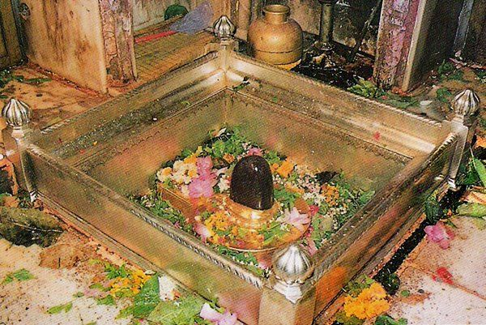
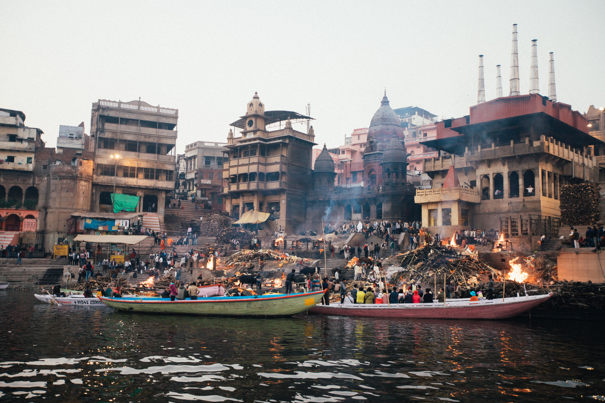
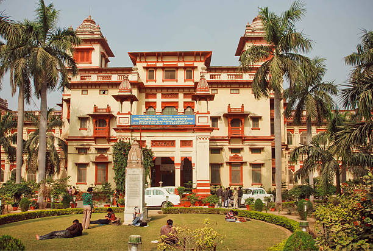
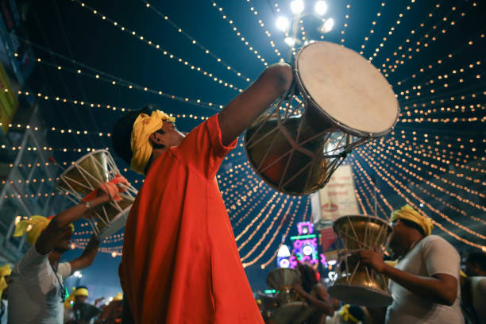
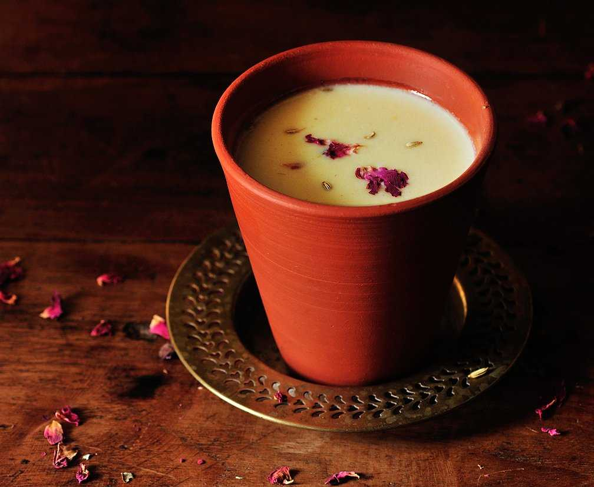

World's oldest living city, Varanasi - also known as Kashi (City of
Life) and Benaras, is the spiritual capital of India. It is one of
Hinduism's seven holy cities. The old city of Varanasi lies along the
western banks of the Ganges, spread across a labyrinth of narrow
galis. Be prepared to walk on foot and encounter some holy
cows! Temples at almost every turn engulf Varanasi. Varanasi is
considered an auspicious place to die, as it is believed to grant moksha
or liberation from the cycle of life and death. Spiritually
enlightening, the heart of the city pulsates around the ghats. Be
prepared for the sights, sounds and smells! Don't miss out on the hot
chaat and cool lassi. Though, all chaos and noise on the ghats take a
pause before dusk when the Ganga Aarti begins to take place, a ceremony
of immense grandeur. Apart from 3,300 temples in Varanasi, it also has 3
churches, 9 Buddhist temples, 3 Gurudwaras, 1,388 mosques and Dargahs,
and 3 Jain temples.
Places to visit

Kashi Vishwanath Temple
Kashi Vishwanath Temple is regarded as one of the most popular Hindu
temple dedicated to Lord Shiva. Located in the heart of Varanasi, the
temple is a core of faith for millions of Hindus.

Ganga Aarti, Varanasi
Ganga Aarti is an important ritual held on a grand scale every morning
and evening on the banks of the holy Ganges. The priests perform the
Aarti at Dashashwamedh Ghat. The entire Ghat gets illuminated with a
divine light that can be felt strongly. The magnificent ritual
involves huge brass lamps lit with oil and the priests chant the holy
mantras that reverberate in the entire location.

Manikarnika Ghat
Considered as a gateway to the next life, Manikarnika Ghat is a highly
sacred riverfront in India. It is believed that spending the last few
days of life at the Ghat and completing the rituals of cremation here
ensure a painless passing and also a way to attain freedom from the
endless cycle of birth and death.

Banaras Hindu University
Established by Madan Mohan Malviya in 1916, Banaras Hindu University
is a 5.3 square kilometre campus in the city. It has about 30,000
students residing in the campus and is the largest residential
university in the continent. The University has a long list of notable
alumni and faculty. The Indo-Gothic architecture and the sprawling
lawns add to the beauty of the place.
Life in here
Art and Festivals

Varanasi has a unique art culture. In the past, it was the center of
traditions and culture, every modern cultural performance was derived
by the ancient art and culture of this land. Top art works that
flourished the land were metal works, Banaras silk weaving and others.
Almost all Hindu festivals are celebrated religiously here. Top
festivals celebrated in Varanasi are Mahashivratri, ShavanMaah, Holi,
Diwali, Dhrupad Mela, Ekadashi and others.
Food of Varanasi

Varanasi has a distinct tint to its cuisine with a certain influence
of dishes and styles of Bihar added to its platter. The popular
delicacies of the area are
Aloo, Bati Chokha, Aloo-Tikki, Pani Puri, Kachori, Tamatar chaat
as well as sweets such as
Jalebis, Rabri and Banarasi Kalakand. Another essential
relish of the town is its Paan, a delicacy of betel leaf.
Varanasi is also famous for its Thandai, which is a milk based drink
with Bhang added in it, which is a form of cannabis legal in India.
Apart from the traditional and local flavors here, one will find
numerous options for Continental and typical Indian food. When in
Varanasi, you can explore the variety of food from the delicious
street food to the numerous cafes at Assi. The city really has it all!
People of Varanasi
Varanasi was once the land of artists, scholars, scientists, medicine
men, and spiritual workers. Today, the people of Varanasi excel in
several occupations starting from computer technology to sports. In
the past, Varanasi was the city that produced numerous scholars and
pandits, who flourished in different parts of the country.